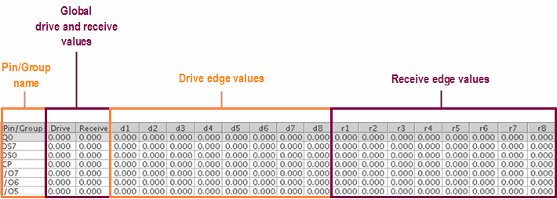

Pin Attribute Table
The Pin Attribute Table is used to edit, change or delete Pin Attribute values.

Pin/Group names
The Pins and Groups which are used in a user defined format will be displayed. These Pins and Groups are set up in the Pin Configuration.
Note The range of the Global Drive and Receive, Drive Edges, and
Receive Edges: -8 ns to +8 ns
Global drive and receive values (in ns)
In this area, the attributes of the driver (input signal) and the receiver (output signal) can be modified by the user.
Drive edge values (in ns)
In this area, the attributes of the drive edges of every pin/group can be modified by the user.
Receive edge values (in ns)
In this area, the attributes of the receive edges of every pin/group can be modified by the user.
Functional changes
- Introduced before SmarTest 6.3.2
- SmarTest 7.0.1: For Pin Scale 9G pins, 16 drive deges including 8 slow edges and 8 fast edges are displyaed in the Pin Attribute Setup Expert Tool.